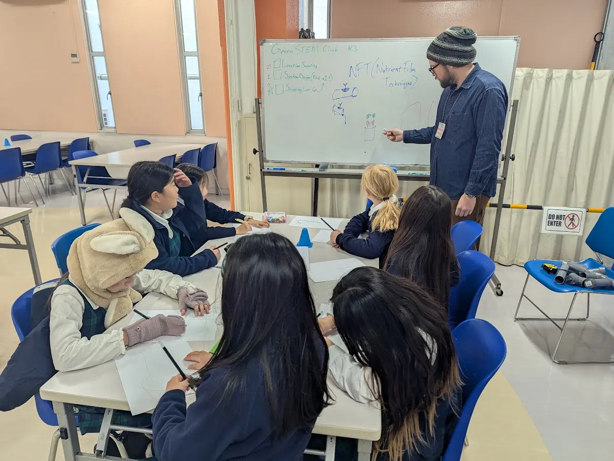

School-based clubs hosted at partner schools.
Weekly hands-on science clubs at your school.

Overview
Our after-school programs run on-site at international schools across Tokyo. Students spend an hour each week building, planting, experimenting, and harvesting with hydroponic systems — learning real science through hands-on work. Programs run for a full semester (typically 10–15 sessions) and we offer three levels to match different age groups and abilities:
Green Explorers (Pre-K and Kindergarten) — A sensory, discovery-based introduction to plants and growing. Young learners explore seeds, roots, water, and light through play, observation, and simple planting activities. Designed to spark curiosity and build comfort with the natural world.
Green STEM Club (Grades K–4) — Our core after-school program. Students build and maintain hydroponic systems, run hands-on experiments with pH, light, and nutrients, and track plant growth over time. Sessions blend science, sustainability, and food literacy in an accessible, engaging format.
Green STEM Studio (Advanced students) — For older or returning students ready for deeper challenges. Studio sessions introduce experimental design, data analysis, system engineering, and sustainability research. Students take on more independent projects and explore topics like food systems, resource efficiency, and urban agriculture at a higher level.
We provide all equipment and materials; the school provides the space.
Typical structure
Each semester follows a progression: students start by learning how hydroponic systems work, then plant their first crops, run experiments on light, nutrients, and pH, and track plant growth over time. Later sessions introduce topics like pest management, food miles, and sustainability. Every session ends with a hands-on task — planting, measuring, harvesting, or building. The final session is a harvest celebration where students taste and bring home what they've grown.
Pricing
¥3,500–4,500 per student per hour, per week. Fees are paid by parents, not the school. All materials, equipment, and instruction are included. Minimum class size of 6–8 students; maximum of 15 per session. Pricing may be adjusted for school-funded arrangements — contact us to discuss.